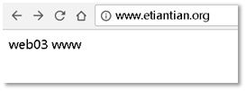
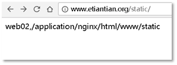

1.1 集群是什么
　　简å�•åœ°è¯´ï¼Œé›†ç¾¤å°±æ˜¯æŒ‡ä¸€ç»„（若干个）相互独立的计算机，利用高速通信网络组æˆ�的一个较大的计算机æœ�务系统，æ¯�个集群节点（å�³é›†ç¾¤ä¸çš„æ¯�å�°è®¡ç®—机）都是è¿�è¡Œå�„自æœ�务的独立æœ�器。这些æœ�务器之间å�¯ä»¥å½¼æ¤é€šä¿¡ï¼Œå��å�Œå�‘用户æ��供应用程åº�ã€�系统资æº�和数æ�®ï¼Œå¹¶ä»¥å�•ä¸€ç³»ç»Ÿçš„模å¼�åŠ ä»¥ç®¡ç�†ã€‚当用户客户机请求集群系统时，集群给用户的感觉就是一个å�•ä¸€ç‹¬ç«‹çš„æœ�务器，而å®�际上用户请求的是一组集群æœ�务器。
　　打开谷æŒã€�百度的页é�¢ï¼Œçœ‹èµ·æ�¥å¥½ç®€å�•ï¼Œä¹Ÿè®¸ä½ è§‰å¾—ç”¨å‡ åˆ†é’Ÿå°±å�¯ä»¥åˆ¶ä½œå‡ºç›¸ä¼¼çš„网页，而å®�际上，这个页é�¢çš„背å��是由æˆ�å�ƒä¸Šä¸‡å�°æœ�务器集群å��å�Œå·¥ä½œçš„结æ�œã€‚而这么多的æœ�务器维护和管ç�†ï¼Œä»¥å�Šç›¸äº’å��è°ƒå·¥ä½œä¹Ÿè®¸å°±æ˜¯è¯»è€…ä½ æœªæ�¥çš„工作è�Œè´£äº†ã€‚
　　若è¦�用一å�¥è¯�æ��述集群，å�³ä¸€å †æœ�务器å�ˆä½œå�šå�Œä¸€ä»¶äº‹ï¼Œè¿™äº›æœºå™¨å�¯èƒ½éœ€è¦�整个技术团队æ�¶æ�„ã€�设计和统一å��调管ç�†ï¼Œè¿™äº›æœºå™¨å�¯ä»¥åˆ†å¸ƒåœ¨ä¸€ä¸ªæœºæˆ¿ï¼Œä¹Ÿå�¯ä»¥åˆ†å¸ƒåœ¨å…¨å›½å…¨ç�ƒå�„个地区的多个机房。
1.2 为什么�有集群
　　高性能ã€�ä»·æ ¼æœ‰æ•ˆæ€§ã€�å�¯ä¼¸ç¼©æ€§ã€�高å�¯ç”¨æ€§
　　��性��管�性��编辑性
1.2.1 集群�类
　　负载�衡集群 LB 解决调度问题
　　高�用集群 HA 解决�点故障问题（keeplived）
　　高性能计算集群 HP �网络计算集群 GC
1.2.2 硬件设备
　　F5 设备 A10
1.2.3 软件
　　nginx （7层 1.9版本之�支�4层）�LVS （4层）�HAproxy （4层 7层）
1.2.4 负载�衡概念说�
　　对用户的访问请求进行调度管�
　　对用户的访问请求进行�力分担

1.2.5 ��代�
　　�收用户请求代替用户��端访问
　　��代��数�转�的区别
1.2.6 �力测试的方�
　　ab （apache里的命令）
　　通过 yum install httpd-tools �得
1.3 nginx��代��践
1.3.1 地�规划说�
|
HOSTNAME |
IP |
说� |
|
lb01 |
10.0.0.5 |
Nginx 主负载�务器 |
|
lb02 |
10.0.0.6 |
nginx 辅负载�务器 |
|
web01 |
10.0.0.8 |
web01�务器 |
|
web02 |
10.0.0.7 |
web02�务器 |
|
web03 |
10.0.0.9 |
web03�务器 |
|
说�：以上为�际生产��负载��规划内容 |
||
ip命令说�
ip address show 查看ip地�
ip route show 查看路由信�
1.3.2 ��代��数�转�的区别
1.3.3 安装部署nginx过程（安装命令集）
yum install -y pcre-devel openssl-devel mkdir -p /server/tools cd /server/tools wget -q http://nginx.org/download/nginx-1.10.3.tar.gz ls -l nginx-1.10.3.tar.gz useradd www -s /sbin/nologin -M tar xf nginx-1.10.3.tar.gz cd nginx-1.10.3 ./configure --user=nginx --group=nginx --prefix=/application/nginx-1.10.3 --with-http_stub_status_module --with-http_ssl_module make make install ln -s /application/nginx-1.10.3 /application/ngin
1.3.4 编写nginx�置文件（统一web�务器�置）
worker_processes 1; events { worker_connections 1024; } http { include mime.types; default_type application/octet-stream; sendfile on; keepalive_timeout 65; log_format main '$remote_addr - $remote_user [$time_local] "$request" ' '$status $body_bytes_sent "$http_referer" ' '"$http_user_agent" "$http_x_forwarded_for"'; server { listen 80; server_name bbs.etiantian.org; location / { root html/bbs; index index.html index.htm; } access_log logs/access_bbs.log main; } server { listen 80; server_name www.etiantian.org; location / { root html/www; index index.html index.htm; } access_log logs/access_www.log main; } }
1.3.5 统一nginx测试�境 （web文件）
mkdir -p /application/nginx/html/{www,bbs} for name in www bbs; do echo $name `hostname` >/application/nginx/html/$name/xiaoxinxin.html;done for name in www bbs; do cat /application/nginx/html/$name/xiaoxinxin.html;done
1.3.6 测试
[[email protected] ~]# curl -H host:bbs.etiantian.org 10.0.0.8/xiaoxinxin.html bbs web01 [[email protected] ~]# curl -H host:bbs.etiantian.org 10.0.0.7/xiaoxinxin.html bbs web02 [[email protected] ~]# curl -H host:bbs.etiantian.org 10.0.0.9/xiaoxinxin.html bbs web03 [[email protected] ~]# curl -H host:www.etiantian.org 10.0.0.8/xiaoxinxin.html www web01 [[email protected] ~]# curl -H host:www.etiantian.org 10.0.0.7/xiaoxinxin.html www web02 [[email protected] ~]# curl -H host:www.etiantian.org 10.0.0.9/xiaoxinxin.html www web03
1.3.7 �置负载�务文件
worker_processes 1; events { worker_connections 1024; } http { include mime.types; default_type application/octet-stream; sendfile on; keepalive_timeout 65; upstream server_pools { server 10.0.0.7:80; server 10.0.0.8:80; server 10.0.0.9:80; } server { listen 80; server_name bbs.etiantian.org; location / { proxy_pass http://server_pools; } }
1.3.8 测试访问
[[email protected] conf]# curl -H host:bbs.etiantian.org 10.0.0.5/xiaoxinxin.html bbs web03 [[email protected] conf]# curl -H host:bbs.etiantian.org 10.0.0.5/xiaoxinxin.html bbs web02 [[email protected] conf]# curl -H host:bbs.etiantian.org 10.0.0.5/xiaoxinxin.html bbs web01
1.4 nginxä¸å¸¸ç”¨æ¨¡å�—说æ˜�
ngx_http_status_module
ngx_http_ssl_module
ngx_http_log_module
ngx_http_upstream_module
ngx_http_proxy_module
1.4.1 模�调度算法
　　 ①. 定义轮询调度算法-rr-默认调度算法
　　 ②. 定义��调度算法-wrr
　　 ③. 定义��调度算法-ip_hash
　　 ④. 定义最�的��数-least_conn
1.4.2 nginx��代�相关两个模�
　　　　upstream 模å�— 类似ä¸�ä¸€ä¸ªæ± å¡˜ï¼Œå°†nginxèŠ‚ç‚¹æ”¾ç½®åˆ°æ± å¡˜ä¸
　　　　proxy模å�— ç”¨æ± å¡˜é‡Œé�¢çš„nginx节点，利用pr oxy进行调用
1.4.3 upstream模å�—æ ¸å¿ƒå�‚数简介
　　　　weight ��
　　　　max_fails 抛得次数
　　　　fail_timeout 失败的超时时间
　　　　backup 备份
1.4.4 weight �数�践 （��）
　　upstream 模��能在http区�里
worker_processes 1; events { worker_connections 1024; } http { include mime.types; default_type application/octet-stream; sendfile on; keepalive_timeout 65; upstream server_pools{ server 10.0.0.7:80 weight=1; server 10.0.0.8:80 weight=2; } server{ listen 80; server_name bbs.etiantian.org; location / { proxy_pass http://server_pools; } } }
测试
[[email protected] tools]# curl 10.0.0.5 web01 www [[email protected] tools]# curl 10.0.0.5 web01 www [[email protected] tools]# curl 10.0.0.5 web02 www [[email protected] tools]# curl 10.0.0.5 web01 www [[email protected] tools]# curl 10.0.0.5 web01 www [[email protected] tools]# curl 10.0.0.5 web02 www
1.4.5 其他的�数说�
　　max_fails 失败的�试次数
　　fail_timeout 失败�的�次�试时间
　　backup 备份节点：所有的节点都挂��数��会请求web01
server 10.0.0.7:80 weight=1 max_fails=3 fail_timeout=10 ; server 10.0.0.8:80 weight=2 max_fails=3 fail_timeout=10 backup;
测试，将web02��
[[email protected] tools]# curl 10.0.0.5 web02 www [[email protected] tools]# curl 10.0.0.5 web02 www
��web02�
[[email protected] tools]# curl 10.0.0.5 web01 www [[email protected] tools]# curl 10.0.0.5 web01 www [[email protected] tools]# curl 10.0.0.5
1.4.6 访问抓包
用户请求报文
负载�衡请求报文
说�：
hosts 主机头��，未�置proxy_set_header Host $host �数，在负载�衡访问的时候会�带hosts信�。
1.4.7 upsrteam�数详细说�
|
upstream模�内�数 |
�数说� |
|
server 10.0.10.8:80 |
负载�衡��的RS�置，�以是IP或域�，如�端��写，默认是80端�。 高并�场景下， IP���域�，通过 DNS�负载�衡。 |
|
weigth=1 |
代表æœ�务器的æ�ƒé‡�，默认值是1。æ�ƒé‡�æ•°å—越大表示æ�¥å�—的请求比例越大。 |
|
max_fails=3 |
Nginxå°�试è¿�æ�¥å��端主机失败的次数，这个值是é…�å�ˆ proxy_next_upstreamã€�fastcgi_next_upstreamå’Œmemcached_next_upstream 这三个å�‚æ•°æ�¥ä½¿ç”¨çš„。当nginxæ�¥æ”¶å��端æœ�务器返å›�这三个å�‚数定义的状æ€�ç �时，会将这个请求转å�‘ç»™æ£å¸¸å·¥ä½œçš„å��端æœ�务器，例如404ã€�502ã€�503ã€� Max_fails的默认值是1 ; ä¼�业场景下建议2-3次。如京东1次，è“�æ±›10æ¬¡ï¼Œæ ¹æ�®ä¸šåŠ¡éœ€æ±‚å�»é…�ç½® |
|
fail_timeout=10s |
在max_fails定义的失败次数å��，è·�离下次检查的间隔时间，默认是10s ;如æ�œmax_fails是5 ,它就检测5次，如æ�œ5次都是502,é‚£ä¹ˆï¼Œå®ƒå°±ä¼šæ ¹æ�®fail_timeout的值，ç‰å¾…10så†�å�»æ£€æŸ¥ï¼Œè¿˜æ˜¯å�ªæ£€æŸ¥ä¸€æ¬¡ï¼Œå¦‚æ�œæŒ�ç»502,在ä¸�é‡�æ–°åŠ è½½ Nginxé…�置的情况下，æ¯�éš”10s都å�ªæ£€æŸ¥ä¸€æ¬¡ã€‚常规业务2~3秒比较å�ˆç�†ï¼Œæ¯”如京东3秒，è“�æ±›3秒，å�¯æ ¹æ�®ä¸šåŠ¡éœ€æ±‚å�»é…�置。 |
|
backup |
çƒå¤‡é…�置（RS节点的高å�¯ç”¨ï¼‰ï¼Œå½“å‰�é�¢æ¿€æ´»çš„RS都失败å��会自动å�¯ç”¨çƒå¤‡RSè¿™æ ‡å¿—çœ‹è¿™ä¸ªæœ�务器作为备份æœ�务器，若主æœ�务器全部宕机了，就会å�‘它转å�‘请求。 注æ„�：当负载调度算法为ip_hash时，å��端æœ�务器在负载å�‡è¡¡è°ƒåº¦ä¸çš„状æ€�ä¸�能是weightå’Œbackup。 |
|
down |
è¿™æ ‡å¿—ç�€æœ�务器永远ä¸�å�¯ç”¨ï¼Œè¿™ä¸ªå�‚æ•°å�¯é…�å�ˆip_hash使用；类似ä¸�注释。 |
　　weight :调节�务器的请求分���。1.4.8 上述命令的说�如下：
　　　　?check :开�对该�务器�康检查。
　　　　?inter:设置è¿�ç»ä¸¤æ¬¡çš„å�¥åº·æ£€æŸ¥é—´éš”时间，å�•ä½�毫秒，默认值2000。
　　　　?rise :指定多少次è¿�ç»æˆ�功的å�¥åº·æ£€æŸ¥å��，å�³å�¯è®¤å®šè¯¥æœ�务器处äº�å�¯ç”¨çŠ¶æ€�。
　　　　?fall :指定多少次��功的�康检查�，�认为�务器为宕机状�，默认值3。
　　　　? maxconn :指定�被��到该�务器的最大并���数。
虽然Nginx本身�支�一致性hash算法，但Nginx的分支Tengine支�。详细��http://tengine.taobao.org/document_cn/http_upstream_consistent_hash_cn.html
1.4.9 ip_hash �数�践
　　�个访问的用户都会生�一个hash值。
æ¯�个请求按客户端 IPçš„ hash结æ�œåˆ†é…�，当新的请求到达时，先将其客户端 IP通过哈希算法哈希出一个值，在éš�å��的客户端请求ä¸ï¼Œå®¢æˆ·IPçš„å’�希值å�ªè¦�相å�Œï¼Œå°±ä¼šè¢«åˆ†é…�至å�Œä¸€å�°æœ�务器，该调度算法å�¯ä»¥è§£å†³åŠ¨æ€�网页的session共享问题，但有时会导致请求分é…�ä¸�å�‡ï¼Œå�³æ— 法ä¿�è¯�1:1çš„è´Ÿè½½å�‡è¡¡ï¼Œå› 为在国内大多数公å�¸éƒ½æ˜¯NAT上网横å¼�，多个客户端会对应_个外部IP ,所以，这些客户端都会被分é…�到å�Œä¸€èŠ‚点æœ�务器，ä»�而导致请求分é…�ä¸�å�‡ã€‚
LVS负载�衡的-p�数�Keepalived�置里的 persistence jimeout 50�数都类似这个 Nginx里的ip_hash�数，其功能都�以解决动�网页的session共享问题。
worker_processes 1; events { worker_connections 1024; } http { include mime.types; default_type application/octet-stream; sendfile on; keepalive_timeout 65; upstream server_pools{ ip_hash; server 10.0.0.7:80; server 10.0.0.8:80; } server{ listen 80; server_name bbs.etiantian.org; location / { proxy_pass http://server_pools; } } }
1.4.10 least_conn �数
　　看�闲，�闲��给�
　　least_connç®—æ³•ä¼šæ ¹æ�®å��端节点的è¿�æ�¥æ•°æ�¥å†³å®šåˆ†é…�情况，哪个机器è¿�æ�¥æ•°å°‘就分å�‘。
1.4.11 fair �数
　　看��应的快
　　æ¤ç®—æ³•ä¼šæ ¹æ�®å��端节点æœ�务器的å“�应时间æ�¥åˆ†é…�请求,å“�应时间çŸçš„优先分é…�ã€‚è¿™æ˜¯æ›´åŠ æ™ºèƒ½çš„è°ƒåº¦ç®—æ³•ã€‚æ¤ç§�算法å�¯ä»¥ä¾�æ�®é¡µé�¢å¤§å°�å’ŒåŠ è½½æ—¶é—´é•¿çŸæ™ºèƒ½åœ°è¿›è¡Œè´Ÿè½½å�‡è¡�ï¼Œä¹Ÿå°±æ˜¯æ ¹æ�®å��端æœ�务器的å“�应时间æ�¥åˆ†é…�请求，å“�应时间çŸçš„优先分é…�。Nginx本身ä¸�支æŒ�fair调度算法，如æ�œéœ€è¦�使用这ç§�调度算法，必须下载Nginx的相关模å�—upstream_fair。
示例如下：
upstream name { server 192.168.1.1; server 192.168.1.2; fair; }
　　除了上é�¢è¿™äº›ç®—法外，还有一些第三方调度算法，例如：url_hashã€�一致性hash算法ç‰.
1.4.12 调度算法
　　定义轮询调度算法 rr 默认调度算法 平�分�
　　定义��调度算法 wrr
　　定义��调度算法 ip-hash
　　定义最�的��数-least_conn
1.4.13 nginx负载�衡相关���数
|
Nginx��代����� |
解释说� |
|
proxy.pass http://server_pools; |
通过proxy_pass功能把用户的清求转å�‘到å��å�‘代ç�†å®šä¹‰çš„upstreamæœ�åŠ¡å™¨æ± |
|
proxy_set_header Host $host |
在代ç�†å�‘å��端æœ�务器å�‘é€�çš„ http请求头ä¸åŠ å…¥ hostå—段信æ�¯ï¼Œç”¨äº�当å��端æœ�务器é…�置有多个虚拟主机时，å�¯ä»¥è¯†åˆ«ä»£ç�†çš„是哪个虚拟主机。这是节点æœ�务器多虚拟主机时的关键é…�ç½® |
|
proxy_set_header X-ForwardedFor $remote_addr; |
在代ç�†å�‘å��端æœ�务器å�‘é€�çš„ http请求头ä¸åŠ å…¥ X-Forward-Forå—段信æ�¯ï¼Œç”¨äº�å��端æœ�务器程åº�ã€�日志ç‰æ�¥æ”¶è®°å½•çœŸå®�用户的 IP ,而ä¸�是代ç�†æœ�务器的 IP这是å��å�‘代ç�†æ—¶ï¼ŒèŠ‚点æœ�务器è�·å�–用户真å®� IPçš„å¿…è¦�功能é…�ç½® |
1.4.14 ��代��错�路
　　01.先在lb01上访问�端节点进行测试
　　02.在lb01上访问本地地�进行测试
　　03.在�览器上进行测试
　　 缓å˜ã€�域å��解æ��
1.4.15 proxy_next_uptream �数
　　当nginxæ�¥æ”¶å��端æœ�务器返å›�proxy_next_upstream å�‚数定义的状æ€�ç �时，会将这个请求转å�‘ç»™æ£å¸¸å·¥ä½œçš„å��端æœ�务器，例如500，502，503，504，æ¤å�‚æ•°å�¯ä»¥æ��å�‡ç”¨æˆ·çš„访问体验。
1.5 å®šä¹‰å¤šä¸ªè™šæ‹Ÿä¸»æœºæ ‡ç¾ä¿¡æ�¯
1.5.1 proxy_set_header �数
�置文件
[[email protected] conf]# cat nginx.conf worker_processes 1; events { worker_connections 1024; } http { include mime.types; default_type application/octet-stream; sendfile on; keepalive_timeout 65; upstream server_pools{ server 10.0.0.7:80; server 10.0.0.8:80; } server{ listen 80; server_name bbs.etiantian.org; location / { proxy_pass http://server_pools; proxy_set_header Host $host; } } server{ listen 80; server_name www.etiantian.org; location / { proxy_pass http://server_pools; proxy_set_header Host $host; } } }
访问抓包
该�数在负载�务器在访问�端�务器的时候 会带上hosts信�。
1.5.2 X-Forwarded-For �数
　　proxy_set_header X-Forwarded-For $remote_addr;
代�的啥时候在��显示真�的IP地�
[[email protected] conf]# cat nginx.conf worker_processes 1; events { worker_connections 1024; } http { include mime.types; default_type application/octet-stream; sendfile on; keepalive_timeout 65; upstream server_pools{ server 10.0.0.8:80; server 10.0.0.7:80; server 10.0.0.9:80; } server{ listen 80; server_name bbs.etiantian.org; location / { proxy_pass http://server_pools; proxy_set_header Host $host; proxy_set_header X-Forwarded-For $remote_addr; } } server{ listen 80; server_name www.etiantian.org; location / { proxy_pass http://server_pools; proxy_set_header Host $host; proxy_set_header X-Forwarded-For $remote_addr; } } server{ listen 80; server_name blog.etiantian.org; location / { proxy_pass http://server_pools; proxy_set_header Host $host; proxy_set_header X-Forwarded-For $remote_addr; } } }
�看日志信�
1 10.0.0.5 - - [30/Oct/2017:12:36:10 +0800] "GET / HTTP/1.0" 200 10 "-" "Mozilla/5.0 (Windows NT 10.0; WOW64) AppleWebKit/537.36 (KHTML, like Gecko) Chrome/61.0.3163.100 Safari/537.36" "10.0.0.1" 2 10.0.0.5 - - [30/Oct/2017:12:36:10 +0800] "GET /favicon.ico HTTP/1.0" 404 571 "http://www.etiantian.org/" "Mozilla/5.0 (Windows NT 10.0; WOW64) AppleWebKit/537.36 (KHTML, like Gecko) Chrome/61.0.3163.100 Safari/537.36" "10.0.0.1"
该å�‚æ•°é…�置，会在访问日志的å��é�¢åŠ 上真æ£çš„访问用户ip
1.5.3 http proxy 模�相关�数说�
|
http proxy 模�相关�数 |
说� |
|
proxy_set_header |
设置http请求headeré¡¹ä¼ ç»™å��端æœ�务器节点，例如：å�¯å®�ç�°è®©ä»£ç�†å��端的æœ�务器节点è�·å�–访问客户端用户的真å®�IP地å�€ |
|
client_body_buffer_size |
用�指定客户端请求主体缓冲区大� |
|
proxy_connect_timeout |
表示å��å�‘代ç�†å��端节点æœ�务器è¿�æ�¥çš„超时时间，å�³å�‘èµ·æ�¡æ‰‹ç‰å€™å“�应的超时时间 |
|
proxy_send_timeout |
表示代ç�†å��端æœ�务器的数æ�®å›�ä¼ æ—¶é—´ï¼Œå�³åœ¨è§„定时间内å��端æœ�åŠ¡å™¨å¿…é¡»ä¼ å®Œæ‰€æœ‰æ•°æ�®ï¼Œå�¦åˆ™nginxå°†æ–开这个è¿�æ�¥ |
|
proxy_read_timeout |
设置nginxä»�代ç�†çš„å��端æœ�务器è�·å�–ä¿¡æ�¯çš„时间，表示è¿�æ�¥å»ºç«‹æˆ�功å��，nginxç‰å¾…å��端æœ�务器的å“�应时间，其å®�是nginxå·²ç»�进入å��端的æ�’队之ä¸ç‰å€™å¤„ç�†çš„时间 |
|
proxy_buffer_size |
设置缓冲区大å°�，默认该缓冲区大å°�ç‰äº�指令proxy_buffers设置的大å°� |
|
proxy_buffers |
设置缓冲区的数�和大�，nginx�代�的�端�务器��的�应信�，会设置到缓冲区 |
|
proxy_busy_buffers_size |
用�设置相�很忙时�以使用的proxy_buffers大�，官方��的大�为 proxy_buffers * 2 |
|
proxy_trmp_file_write_size |
指定proxy缓å˜ä¸´æ—¶æ–‡ä»¶çš„大å°� |
1.6.1 相�URL目录地�转�的应用场景1.6 基�目录（uri）进行转�--网站动�分离
ã€€ã€€æ ¹æ�®HTTPçš„URL进行转å�‘的应用情况，被称为第7层（应用层）的负载å�‡è¡¡ï¼Œè€ŒLVSçš„è´Ÿè½½å�‡è¡¡ä¸€èˆ¬ç”¨äº�TCPç‰çš„转å�‘ï¼Œå› æ¤è¢«ç§°ä¸ºç¬¬4å±‚ï¼ˆä¼ è¾“å±‚ï¼‰çš„è´Ÿè½½å�‡è¡¡ã€‚
　　在ä¼�业ä¸ï¼Œæœ‰æ—¶å¸Œæœ›å�ªç”¨ä¸€ä¸ªåŸŸå��对外æ��ä¾›æœ�务，ä¸�希望使用多个域å��对应å�Œä¸€ä¸ªäº§å“�业务，æ¤æ—¶å°±éœ€è¦�在代ç�†æœ�务器上通过é…�置规则，使得匹é…�ä¸�å�Œè§„则的请求会交给ä¸�å�Œçš„æœ�åŠ¡å™¨æ± å¤„ç�†ã€‚这类业务有：
　　? 业务的域�没有拆分或者�希望拆分，但希望��动�分离�多业务分离，
　　? ä¸�å�Œçš„客户端设备（例如：手机和 PC端）使用å�Œä¸€ä¸ªåŸŸå��访问å�Œä¸€ä¸ªä¸šåŠ¡ç½‘站，就需è¦�æ ¹ æ�®è§„则将ä¸�å�Œè®¾å¤‡çš„用户请求交给å��端ä¸�å�Œçš„æœ�务器处ç�†ï¼Œä»¥ä¾¿å¾—到最佳用户体验。
1.6.2 第一个里程碑： �务器规划
|
目录（uri） |
ip |
�务器目录 |
类� |
|
/upload |
10.0.0.8:80 |
html/www/upload |
upload�务器 |
|
/static |
10.0.0.7:80 |
html/www/static |
static���务器 |
|
/ |
10.0.0.9:80 |
html/www |
默认 |
1.6.3 第二个里程碑：创建/设置upstream负载信�
upstream upload_pools { server 10.0.0.8:80; } upstream static_pools { server 10.0.0.7:80; } upstream default_pools { server 10.0.0.9:80; }
1.6.4 第三个里程碑：如何调用upstream信�
location /static/ { proxy_pass http://static_pools; proxy_set_header Host $host; proxy_set_header X-Forwarded-For $remote_addr; } location /upload/ { proxy_pass http://upload_pools; proxy_set_header Host $host; proxy_set_header X-Forwarded-For $remote_addr; } location / { proxy_pass http://default_pools; proxy_set_header Host $host; proxy_set_header X-Forwarded-For $remote_addr; }
1.6.5 第四个里程碑： 编写�置文件lb01
worker_processes 1; events { worker_connections 1024; } http { include mime.types; default_type application/octet-stream; sendfile on; keepalive_timeout 65; log_format main '$remote_addr - $remote_user [$time_local] "$request" ' '$status $body_bytes_sent "$http_referer" ' '"$http_user_agent" "$http_x_forwarded_for"'; upstream upload_pools { server 10.0.0.8:80; } upstream static_pools { server 10.0.0.7:80; } upstream default_pools { server 10.0.0.9:80; } server { listen 80; server_name www.etiantian.org; location /static/ { proxy_pass http://static_pools; proxy_set_header Host $host; proxy_set_header X-Forwarded-For $remote_addr; } location /upload/ { proxy_pass http://upload_pools; proxy_set_header Host $host; proxy_set_header X-Forwarded-For $remote_addr; } location / { proxy_pass http://default_pools; proxy_set_header Host $host; proxy_set_header X-Forwarded-For $remote_addr; } access_log logs/access_www.log main; } }
1.6.6 第五个里程碑： 创建�境
www.etiantian.org/xxx.html www.etiantian.org/upload/xxx.html www.etiantian.org/static/xxx.html
##web01
mkdir -p /application/nginx/html/www/upload echo "web01 upload" >/application/nginx/html/www/upload/xxx.html
##web02
mkdir -p /application/nginx/html/www/static echo "web02 static" >/application/nginx/html/www/static/xxx.html
##web03
echo "web03 default" >/application/nginx/html/www/xxx.html
1.6.7 第å…个里程碑： 进行测试
[[email protected] conf]# curl -H host:www.etiantian.org 10.0.0.5/upload/ web01 upload:/application/nginx/html/www/upload [[email protected] conf]# curl -H host:www.etiantian.org 10.0.0.5/static/ web02,/application/nginx/html/www/static [[email protected] conf]# curl -H host:www.etiantian.org 10.0.0.5/ web03 www
�览器进行访问测试

1.7 æ ¹æ�®å®¢æˆ·ç«¯çš„设备å®�ç�°è½¬å�‘（user_agent）
1.7.1 user_agent的应用
1.7.2 修改lb01�置文件

1 worker_processes 1; 2 events { 3 worker_connections 1024; 4 } 5 http { 6 include mime.types; 7 default_type application/octet-stream; 8 sendfile on; 9 keepalive_timeout 65; 10 log_format main '$remote_addr - $remote_user [$time_local] "$request" ' 11 '$status $body_bytes_sent "$http_referer" ' 12 '"$http_user_agent" "$http_x_forwarded_for"'; 13 14 upstream upload_pools { 15 server 10.0.0.8:80; 16 } 17 18 upstream static_pools { 19 server 10.0.0.7:80; 20 } 21 22 upstream default_pools { 23 server 10.0.0.9:80; 24 } 25 26 server { 27 listen 80; 28 server_name www.etiantian.org; 29 location / { 30 if ($http_user_agent ~* "MSIE") 31 { 32 proxy_pass http://static_pools; 33 } 34 if ($http_user_agent ~* "Chrome") 35 { 36 proxy_pass http://upload_pools; 37 } 38 proxy_pass http://default_pools; 39 proxy_set_header Host $host; 40 } 41 access_log logs/access_www.log main; 42 } 43 }
View Code lb01�置文件
1.7.3 进行测试
　　基äº�上一æ¥çš„æ“�作，ç�°åœ¨å�¯ä»¥ä¹‹é—´çš„进行访问测试
curl -A 指定访问类�
[[email protected] conf]# curl -A MSIE -H host:www.etiantian.org 10.0.0.5 web02 www [[email protected] conf]# curl -A Chrome -H host:www.etiantian.org 10.0.0.5 web01 www [[email protected] conf]# curl -A xx -H host:www.etiantian.org 10.0.0.5 web03 www
1.8 利用扩展�进行转�
利用å��ç¼€å��进行转å�‘ä¸�nginxä¸çš„基äº�å��ç¼€çš„è½¬è·³ä¸€æ ·å®�ç�°ã€‚
location ~.*.(gif|ipg|jpeg|png|bmp|swf|css|js)$ { peoxy_pass http://static_pools; include proxy.conf }
本文出自“惨绿少年”，欢è¿�转载，转载请注æ˜�出处ï¼�http://blog.znix.top